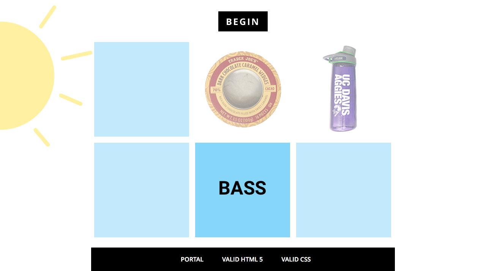
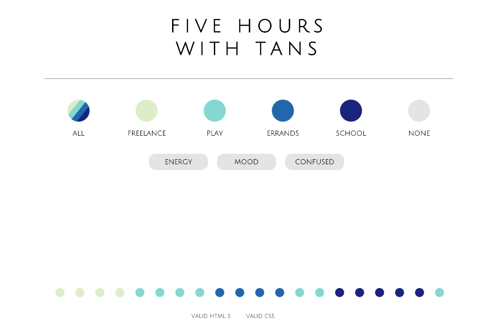
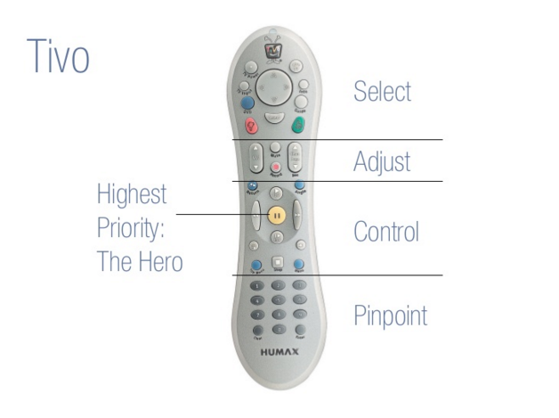
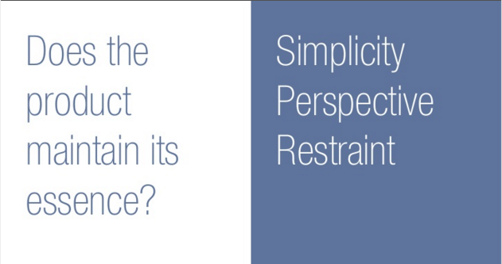
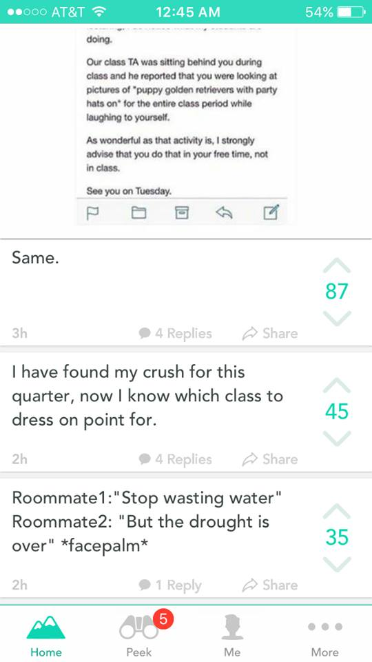

"Pocket Full of Sunshine-I Mean INTERFACE" Exercise
Feb 4, 2016 2:42pm
This was by far the most engaging assignment for me. First (1),My interface has many cues such as hover and opacity changes that help the user know if something has interaction. Also, 2, the information is given in increments to focus the audience members' attention to the order in which the material is to be read. And 3, the interface is well spaced out and allows elements to breath in their own space. The color scheme is also soothing and not distraction. It serves as more of a complement to the overal design. I LOVE CODING! THANKS GLENDA, YOU'RE AWESOME!
"Time is on my side" Exercise
Jan 28, 2016 2:37pm
This was definitely a challenging exercise, but very engaging. My interface is very clean, simple, and interacts with the user. For example, the user can clearly see where he/she is navigating the mouse by the use of highlights. Also, the user can see where each activity lies by hovering over the options above.
Bill Derouchey's Take on Interface Design
Jan 18, 2016 2:16am
I normally don't do work this late on a sunday night during a three day weekend, but I like the sound of the rain. Anyways, Bill Derouchey's slides of interface designs shows that a purposeful and functional interface design makes for a cohesive, easy-to-use final product. I noticed that as a designer I am into the more simple designs that have certain features and components laid out for a specific reason; their color choice indicates a certain initial function such as red-stop, green-go; the positioning is placed at a specific place due to result of user testing and where the hand is placed on the device, and so on. The image below shows the different sections on the remote of how the buttons are laid out. I never knew they were catagorized by section so I was surprised to see this image. You can also see effective use of highlights, or color accents, such as the green button to indicate a forward, or positive motion (in this case a thumbs up) and in contrast the red to indicate an inhibitory motion (in this case thumbs down). I noticed during the presentation that the color red when used for inhibitory purposes and recording creates conflict when the two are together. However, I do appreciate how the recording button in the adjust section is a red circle, which is a common recording symbol, while the red thumbs down button is completely red with a symbol on it. This is an effective way of separating the two because although the colors are the same, I find myself used to the fact that "record" is a small red dot, rather than a shape that's colored red. See more of the slide show here.
 Design Interface: Yik Yak
Jan 7, 2016 12:13am
I endulge in Yik Yak, an anonymous forum, far more than my conscious allows me to. It's a place where jokes are spread throughout your current city like wildfire and some of the more clever statements that I've heard during my 3.5 years at Davis were those from Yik Yak users. Besides the allure of anonymous acts, Yik Yak caught my attention with its simple and clean design centered around the user's preferences and thought process. The App is simple, icons are clearly and appropriately used, navigation resides in either the top or bottom section of the screen, and the typeface superfluously clean; just the way I like it. Not only does Yik Yak have a minimalistic and straight forward design, the playful style and anonymous silliness of the app itself is shown in a subtle way through its seafoam green color accent and the logo, which of course is a yak. The user definitely knows what they're using and what to expect once exploring Yik Yak for the first time.
